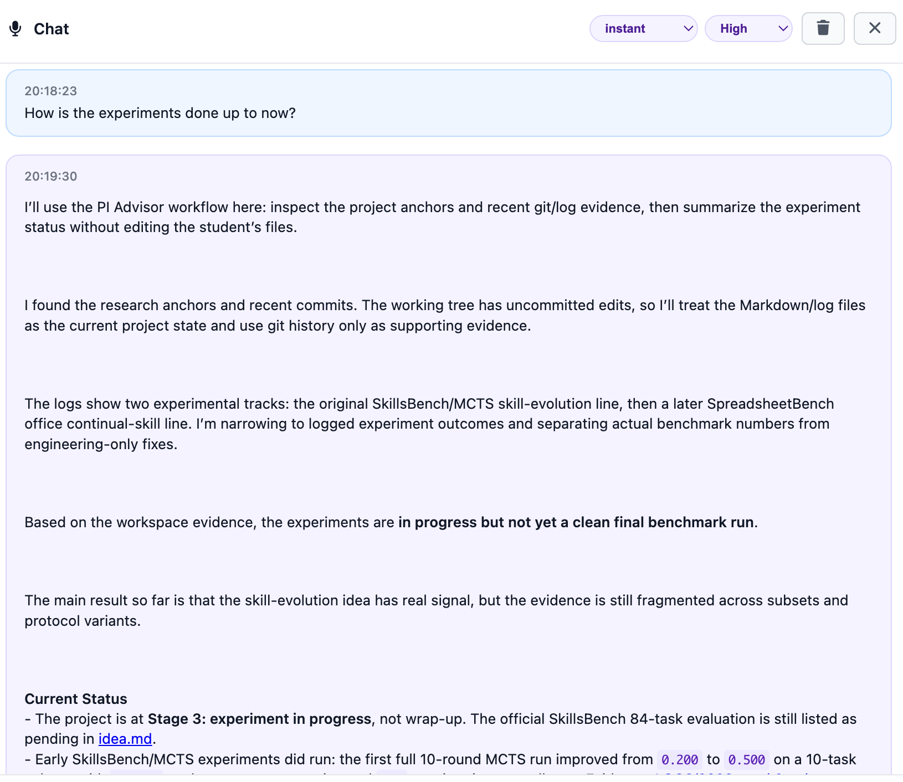

New staff start without the project memory
History, file structure, decisions, and unwritten rules live across people and documents. Senior staff become the search engine.
Enterprise companion-agent system
Astar AgentOS turns scattered work evidence into project progress, reports, decisions, and team signals managers can verify.

The work may be moving, but managers still cannot see what a new person must learn, what a task really means, what was lost in handoff, or whether a report is backed by evidence.
History, file structure, decisions, and unwritten rules live across people and documents. Senior staff become the search engine.
Goals, priorities, boundaries, and acceptance criteria are repeated in meetings and messages, but rarely stay attached to the work.
The next person can see outputs, but not the reasoning trail. They restart discovery and ask the same questions again.
The best people are pulled into status collection. Managers still receive summaries that are difficult to trace back to evidence.
The secretary stays close to the staff member's work surface. It explains visible context, turns work into reports, and keeps important conclusions reusable, so staff spend less time in meetings and more time doing focused work.

Staff do not have to keep re-explaining what is on screen, which file matters, or what the next small action should be.

Astar AgentOS turns staff work into a management view that shows progress, stale work, open items, people signals, and evidence-backed profiles.
Project progress, stale work, open items, and reports are generated from the work record.
Profiles and member rows reveal current load, blockers, freshness, and skill signals.
Open issues become decision objects instead of hidden chat fragments.




The system does not just summarize. It helps managers decide where to intervene and who should take the next project.
Open questions become a decision queue. Candidate matching uses progress, skill tags, load, and recent status rather than memory.


Astar AgentOS is designed as a local-first Electron desktop app with Codex CLI, OpenChronicle screen awareness, org-shared Git collaboration protocol, and signed audit.
Astar AgentOS can sit above documents, Git, project management, and internal knowledge systems without forcing a new work entry point.
Cloud or local deployment can use long-context model support for files, history, and cross-project discussion.
This covers secretary-layer reporting, explanation, write-back, project status, and management Q&A. It excludes large-scale code generation.
Identity activation, project publishing, decision write-back, and signed audit already have local validation baselines.

Deployment is not only about running models. It is about making the secretary layer observable, governable, and cheap enough to use every day.